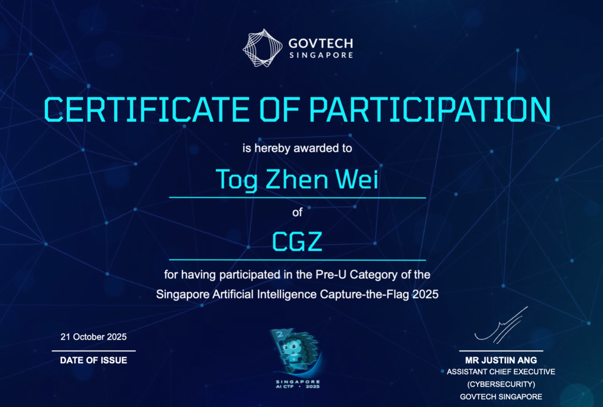
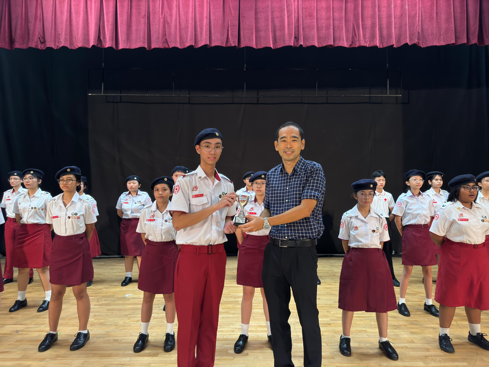
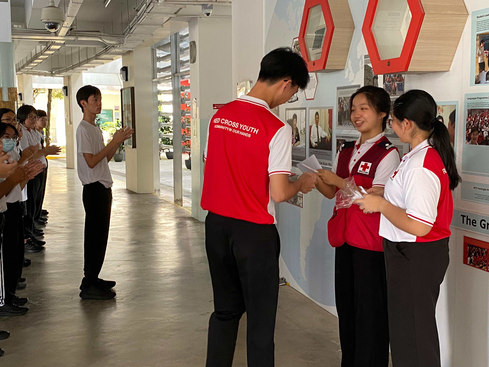
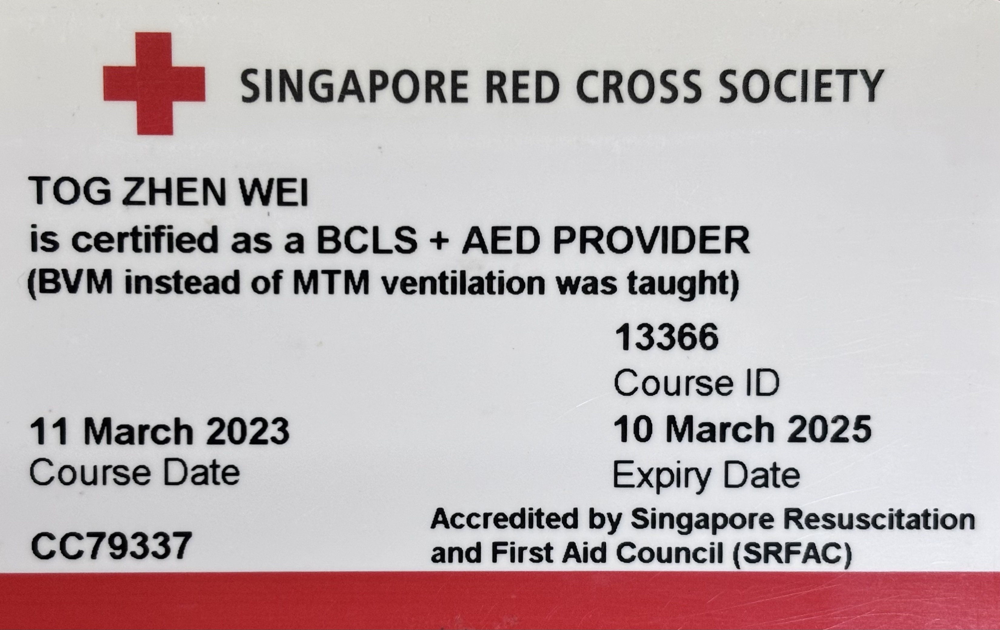
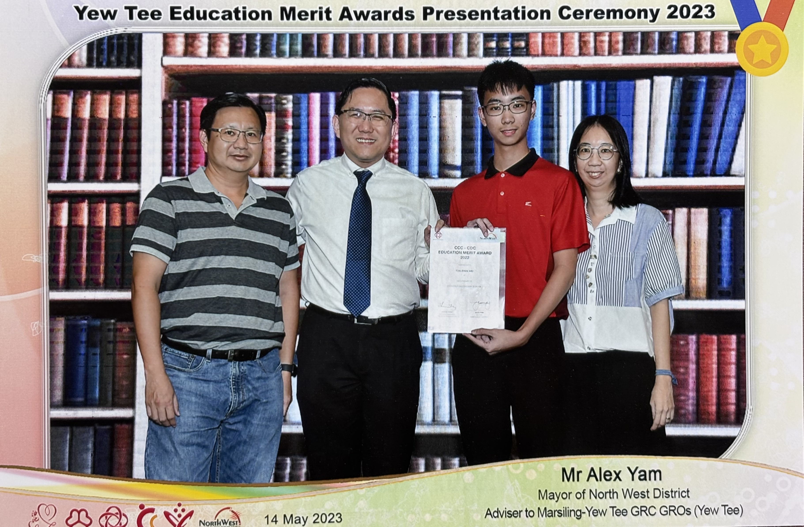

03 — Achievements
Milestones
& recognition.
2026
NUS - SYNAPXE - IMDA AI Innovation Challenge - Participant
National University of Singapore
filler
2026
Tan Kah Kee Young Inventors' Award (TKKYIA) - Participant
Singapore Tan Kah Kee Foundation
Participating in the Tan Kah Kee Young Inventors' Award gave me the opportunity to develop an innovation idea focused on electrical or electronic applications in healthcare. My project aimed to address challenges associated with the ageing population in Singapore by exploring how technology and material science concepts could support better health monitoring and care. The experience strengthened my ability to identify real-world problems, think creatively about potential engineering solutions, and translate scientific ideas into practical applications. This competition reflects my interest in using technology and innovation to contribute to societal well-being.
2025

Singapore AI Capture The Flag (CTF) - Participant
GovTech & Cyber Security Agency of Singapore (CSA Singapore)
Participating in the Singapore AI Capture The Flag (CTF) competition was a challenging and intellectually demanding experience that tested both my technical knowledge and resilience. The competition required participants to solve a series of coding and AI-related challenges, including identifying vulnerabilities and strategically “jailbreaking” systems to retrieve hidden codes for points. Competing as a solo participant against teams of four pushed me to think independently, manage time effectively, and remain composed under pressure. Securing a position within the top 50% despite the competitive disadvantage reflects my problem-solving ability, adaptability, and determination to perform at a high standard even in demanding environments.
2025
NUS Built Environment Case Competition (BECC) - Participant
National University of Singapore
Participating in the NUS Built Environment Case Competition allowed me to apply both online research data and knowledge gained from geography studies to develop a practical and thoughtful solution idea. The competition required analytical thinking to interpret environmental and urban-related information, as well as creativity in translating that understanding into a viable proposal. Through this experience, I strengthened my ability to work with limited time, evaluate real-world data, and structure ideas in a coherent and meaningful way. Taking part in this competition reflects my interest in connecting academic knowledge with practical problem-solving in real-world contexts.
2024

National First Aid Competition — Silver Award
Red Cross Youth Singapore
My dedication to service extends beyond academics. In the 2024 National First Aid Competition, my team and I rose to the challenge, earning the Silver Award. This experience honed my critical thinking and problem-solving skills under pressure, as we responded to simulated emergencies requiring quick and precise first aid procedures. The Silver Award reflects not only my own skills but also the strong teamwork and collaboration within our team.
2024

Physics Olympiad — Honourable mention
17th Singapore Junior Physics Olympiad (SJPO)
Participating in the Physics Olympiad in 2024 was an incredibly challenging yet rewarding experience. As the only combined science student from my school, I faced a unique disadvantage compared to my peers who had studied pure science. The competition demanded a deep understanding of complex concepts that went beyond the scope of my usual coursework. The experience pushed me to think critically and creatively, ultimately allowing me to rise to the occasion.
2024

Red Cross Youth — Warrant Officer
Zhenghua Secondary School
Attained the rank of Warrant Officer in Red Cross Youth, working directly alongside the Chairperson and Vice Chairperson to oversee CCA operations. Responsible for logistics, lesson planning, and the overall well-being of cadets.
2024

Edusave Scholarship
Ministry of Education
Receiving the Edusave Scholarship for being in the top 10 percent of the cohort is a significant academic milestone that reflects consistent discipline and perseverance. This scholarship recognises sustained excellence across subjects and a strong commitment to maintaining high standards in all areas of study. Achieving this distinction required effective time management, resilience, and the ability to perform under pressure. Being awarded the Edusave Scholarship affirms my dedication to academic mastery and my drive to continually challenge myself to perform at my best.
2024
Edusave Award for Achievement, Good Leadership and Service (EAGLES)
Ministry of Education
Receiving the Edusave Award for Achievement, Good Leadership and Service (EAGLES) is a meaningful recognition of both academic commitment and active contribution to the school community. This award reflects consistent performance, responsible leadership, and a genuine dedication to service beyond personal achievement. It signifies my ability to balance responsibilities effectively while contributing positively to the growth and well-being of others. Attaining EAGLES affirms my commitment to striving for excellence with integrity and purpose.
2023

Academic Excellence in Geography
Zhenghua Secondary School
In 2023, I excelled in this subject, achieving a mark that placed me amongst the top performers in my cohort. This academic achievement reflects my deep curiosity about the world's landscapes, cultures, and how human and physical processes interact. It wasn't just about memorisation; I actively sought to understand the complex relationships that shape our planet. This success fuelled my enthusiasm for geography, and I'm eager to continue exploring this fascinating subject further.
2023

Edusave Scholarship
Ministry of Education, Singapore
My dedication to academics has consistently placed me among the top performers. This drive is evident in my rankings, where I've secured a spot within the top 10% of my cohort. This achievement isn't just a mark on a report card – it reflects my commitment to understanding concepts deeply and pushing myself to excel.
2023

First Aid Certification
Singapore Red Cross Society
Completed the First Aid GMW (Gold Modular Workshop) certification, covering foundational to advanced life-saving skills. Reflects my commitment to being a capable and adaptable first responder in diverse emergency situations.
2022

Education Merit Award
Ministry of Education, Singapore
Attaining the Education Merit Award is a testament to the dedication to academic excellence. This recognition celebrates not only my achievements in the classroom but also my commitment to continuous learning and pursuit of knowledge.
2022

Smoke Free Ambassador Competition - Second Place
Singapore Red Cross Society
It was a tough task to come in second in the Smoke-free Ambassador competition, especially up against institutions like Raffles. It was no minor accomplishment to overcome such fierce opposition; it demonstrated our tenacity and fortitude. Even if things were difficult, we overcame them and took pride in coming in second.